MSDS 6306: Doing Data Science - Case Study 1
Duy Nguyen and Garrett Shankel
3/5/2022
Introduction
The CEO and CFO of a major brewing company have provided our team with a dataset for nationwide statistics of beers and breweries. Our job as data scientists are to perform a thorough investigation into this data.
Things we have found include but are not limited to:
- Outlining the data through graphical means
- Mapping the correlations between ABV and IBU
- Investigating the brewery density per state
To cap off the investigation, we took an in-depth look into the distributions of the top 10 beers styles to provide an incentive for market expansion.
Libraries
library(tidyverse) # dplyr, ggplot2, tidyr, stringr
library(GGally)
library(class)
library(caret)
library(ggpubr)
library(usmap)
library(gtrendsR)
library(lessR)Reading In Data From File
getwd()## [1] "C:/Users/Garrett/Documents/shankel3443.github.io"breweries = read.csv('Breweries.csv')
beers = read.csv('Beers.csv')1.1. How Many Breweries are Present in Each State?
The following graphs below show the brewery count per state. First a bar graph gives an indication of the distribution of breweries among states. As expected smaller states tend to have less breweries while larger states have more. From here we can quickly see that the state with the most breweries is Colorado.
# Wrangling the data and plot
breweries1 = breweries %>%
group_by(State) %>%
summarise(count = n())
ggplot(breweries1, aes(x = State, y = count, fill = State)) +
geom_bar(stat = "identity") +
geom_text(aes(label = count), vjust = -0.3) +
scale_x_discrete(labels = NULL, breaks = NULL) + labs(x = "") +
ggtitle("Number of Breweries In Each State")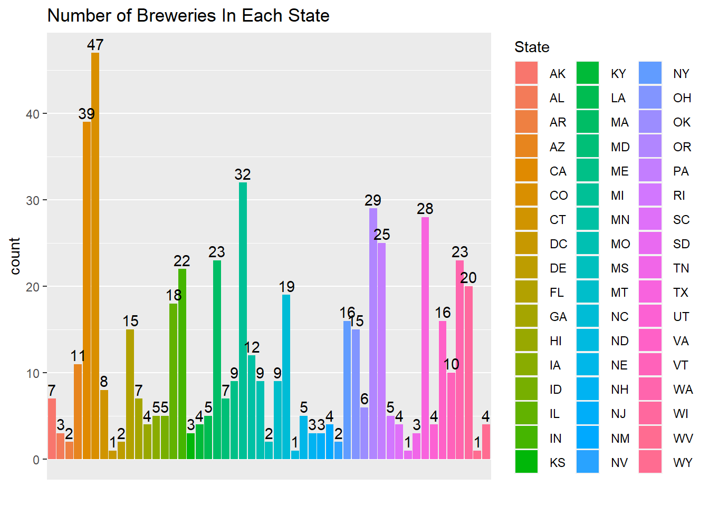
# Displaying top 5 states in terms of breweries
topbreweries = breweries %>% count(State, sort = TRUE)
head(topbreweries)## State n
## 1 CO 47
## 2 CA 39
## 3 MI 32
## 4 OR 29
## 5 TX 28
## 6 PA 251.2. Building a Brewery Count Heatmap
Here we have included a map of the US showing each state labeled with its corresponding brewery count. Just another way to visualize this data.
# Pulling centroid positions for US heatmap
centroid_labels <- utils::read.csv(system.file("extdata", paste0("us_", "states", "_centroids.csv"), package = "usmap"), stringsAsFactors = FALSE)
head(centroid_labels)## x y fips abbr full
## 1 1245764.3 -1299748.5 1 AL Alabama
## 2 -1207947.6 -1848766.9 2 AK Alaska
## 3 -1073378.6 -1161723.9 4 AZ Arizona
## 4 679584.1 -1086852.7 5 AR Arkansas
## 5 -1686172.2 -812558.6 6 CA California
## 6 -479799.1 -650936.9 8 CO Colorado# Changing column name for merging
colnames(breweries1)[1] <- "abbr"
# Fixing "abbr" column by trimming leading spaces
breweries1$abbr <- trimws(breweries1$abbr, which = c("left"))
head(breweries1)## # A tibble: 6 x 2
## abbr count
## <chr> <int>
## 1 AK 7
## 2 AL 3
## 3 AR 2
## 4 AZ 11
## 5 CA 39
## 6 CO 47# Facilitating the merge
breweries_with_position = merge(centroid_labels, breweries1, by = as.factor(c("abbr")))
breweries_with_position$count <- as.numeric(breweries_with_position$count)
breweries_with_position$fips <- as.character(breweries_with_position$fips)
head(breweries_with_position)## abbr x y fips full count
## 1 AK -1207947.6 -1848766.9 2 Alaska 7
## 2 AL 1245764.3 -1299748.5 1 Alabama 3
## 3 AR 679584.1 -1086852.7 5 Arkansas 2
## 4 AZ -1073378.6 -1161723.9 4 Arizona 11
## 5 CA -1686172.2 -812558.6 6 California 39
## 6 CO -479799.1 -650936.9 8 Colorado 47# Isolating the large states for plotting
breweries_with_position_small_states = breweries_with_position[(breweries_with_position$abbr == "DC") | (breweries_with_position$abbr == "MD") |
(breweries_with_position$abbr == "DE") | (breweries_with_position$abbr == "CT") |
(breweries_with_position$abbr == "NH") | (breweries_with_position$abbr == "MA") |
(breweries_with_position$abbr == "VT") | (breweries_with_position$abbr == "NJ") |
(breweries_with_position$abbr == "RI"),]
breweries_with_position_large_states = setdiff(breweries_with_position, breweries_with_position_small_states)
# Plot labeled US Map for Breweries Count
plot_usmap(fill = "white", color = "darkblue") +
geom_text(size = 2.7, color = "red", data = breweries_with_position_large_states, aes(x = x, y = y, label = paste(abbr, count, sep = ":")))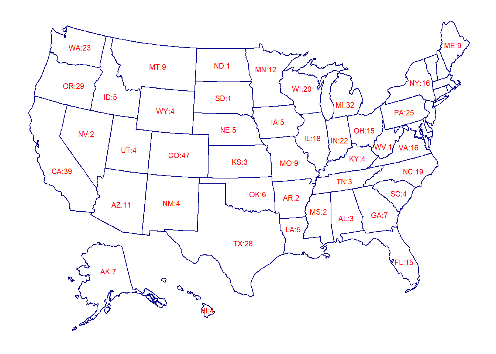
# Plot labeled Smaller Eastern States
plot_usmap(include = c("DC", "MD", "DE", "CT", "NH", "MA", "VT", "NJ", "RI"), color = "darkblue") +
geom_text(size = 2.7, color = "red", data = breweries_with_position_small_states, aes(x = x, y = y, label = paste(abbr, count, sep = ":")))
1.3. Building a Brewery Density versus Population Heatmap
From the map in section 1.2 we realized that a density vs population map would help give further insight. The following density map was created to show states where the population was either oversaturated or undersaturated with breweries.
# Facilitating the merge
breweries_with_position <- breweries_with_position %>% relocate(abbr, .before = x)
breweries_with_position <- breweries_with_position %>% relocate(fips, .before = abbr)
str(statepop)## tibble [51 x 4] (S3: tbl_df/tbl/data.frame)
## $ fips : chr [1:51] "01" "02" "04" "05" ...
## $ abbr : chr [1:51] "AL" "AK" "AZ" "AR" ...
## $ full : chr [1:51] "Alabama" "Alaska" "Arizona" "Arkansas" ...
## $ pop_2015: num [1:51] 4858979 738432 6828065 2978204 39144818 ...str(breweries_with_position)## 'data.frame': 51 obs. of 6 variables:
## $ fips : chr "2" "1" "5" "4" ...
## $ abbr : chr "AK" "AL" "AR" "AZ" ...
## $ x : num -1207948 1245764 679584 -1073379 -1686172 ...
## $ y : num -1848767 -1299748 -1086853 -1161724 -812559 ...
## $ full : chr "Alaska" "Alabama" "Arkansas" "Arizona" ...
## $ count: num 7 3 2 11 39 47 8 1 2 15 ...# Merge
breweries_with_position = breweries_with_position[c(2,5,6)]
USBreweries = merge(statepop, breweries_with_position)
colnames(USBreweries)[5] <- "breweries"
str(USBreweries)## 'data.frame': 51 obs. of 5 variables:
## $ abbr : chr "AK" "AL" "AR" "AZ" ...
## $ full : chr "Alaska" "Alabama" "Arkansas" "Arizona" ...
## $ fips : chr "02" "01" "05" "04" ...
## $ pop_2015 : num 738432 4858979 2978204 6828065 39144818 ...
## $ breweries: num 7 3 2 11 39 47 8 1 2 15 ...# US Heat Map of Brewery vs Population
plot_usmap(data = USBreweries, values = "breweries", color = "orange") +
scale_fill_continuous(low = "white", high = "orange", name = "Breweries (2017)", label = scales::comma) +
theme(legend.position = "right")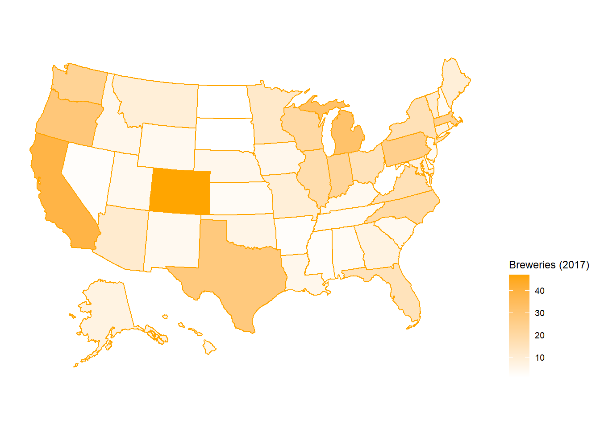
2. Merging “Beers” Data With “Breweries” Data
After merging we can see that the columns are properly placed with no repeats.
# Rename column in Beers.csv for merging
colnames(beers)[5] = "Brew_ID"
mergedData = merge(breweries, beers, by = c("Brew_ID"))
# Rename columns of merged data for clarity
colnames(mergedData)[2] = "Brewery_Name"
colnames(mergedData)[5] = "Beer_Name"
head(mergedData)## Brew_ID Brewery_Name City State Beer_Name Beer_ID ABV IBU Style Ounces
## 1 1 NorthGate Brewing Minneapolis MN Pumpion 2689 0.060 38 Pumpkin Ale 16
## 2 1 NorthGate Brewing Minneapolis MN Stronghold 2688 0.060 25 American Porter 16
## 3 1 NorthGate Brewing Minneapolis MN Parapet ESB 2687 0.056 47 Extra Special / Strong Bitter (ESB) 16
## 4 1 NorthGate Brewing Minneapolis MN Get Together 2692 0.045 50 American IPA 16
## 5 1 NorthGate Brewing Minneapolis MN Maggie's Leap 2691 0.049 26 Milk / Sweet Stout 16
## 6 1 NorthGate Brewing Minneapolis MN Wall's End 2690 0.048 19 English Brown Ale 16tail(mergedData)## Brew_ID Brewery_Name City State Beer_Name Beer_ID ABV IBU
## 2405 556 Ukiah Brewing Company Ukiah CA Pilsner Ukiah 98 0.055 NA
## 2406 557 Butternuts Beer and Ale Garrattsville NY Porkslap Pale Ale 49 0.043 NA
## 2407 557 Butternuts Beer and Ale Garrattsville NY Snapperhead IPA 51 0.068 NA
## 2408 557 Butternuts Beer and Ale Garrattsville NY Moo Thunder Stout 50 0.049 NA
## 2409 557 Butternuts Beer and Ale Garrattsville NY Heinnieweisse Weissebier 52 0.049 NA
## 2410 558 Sleeping Lady Brewing Company Anchorage AK Urban Wilderness Pale Ale 30 0.049 NA
## Style Ounces
## 2405 German Pilsener 12
## 2406 American Pale Ale (APA) 12
## 2407 American IPA 12
## 2408 Milk / Sweet Stout 12
## 2409 Hefeweizen 12
## 2410 English Pale Ale 123. Addressing The Missing Values In Each Column
From the data provided, 62 values are missing in the ABV column, and 1005 are missing in the IBU column. In order to move forward with the investigation we needed to impute these values. First we started by visualing the data. As shown in the first graph below the distribution of ABV is fairly normal. Based on this we decided to use the mean of the data set in order to replace the missing values. Next we generated a graph of the IBU data. As is shown in the graph the data is right skewed. Therefore we chose the median of IBU as a replacement for the missing values since the median is robust to skewness.
# Inspecting Data
length(unique(breweries$State))## [1] 51str(mergedData)## 'data.frame': 2410 obs. of 10 variables:
## $ Brew_ID : int 1 1 1 1 1 1 2 2 2 2 ...
## $ Brewery_Name: chr "NorthGate Brewing " "NorthGate Brewing " "NorthGate Brewing " "NorthGate Brewing " ...
## $ City : chr "Minneapolis" "Minneapolis" "Minneapolis" "Minneapolis" ...
## $ State : chr " MN" " MN" " MN" " MN" ...
## $ Beer_Name : chr "Pumpion" "Stronghold" "Parapet ESB" "Get Together" ...
## $ Beer_ID : int 2689 2688 2687 2692 2691 2690 2683 2686 2685 2684 ...
## $ ABV : num 0.06 0.06 0.056 0.045 0.049 0.048 0.042 0.08 0.125 0.077 ...
## $ IBU : int 38 25 47 50 26 19 42 68 80 25 ...
## $ Style : chr "Pumpkin Ale" "American Porter" "Extra Special / Strong Bitter (ESB)" "American IPA" ...
## $ Ounces : num 16 16 16 16 16 16 16 16 16 16 ...# Checking NAs
colSums(is.na(mergedData))## Brew_ID Brewery_Name City State Beer_Name Beer_ID ABV IBU Style
## 0 0 0 0 0 0 62 1005 0
## Ounces
## 0ggplot(mergedData, aes(x = ABV)) + geom_density() 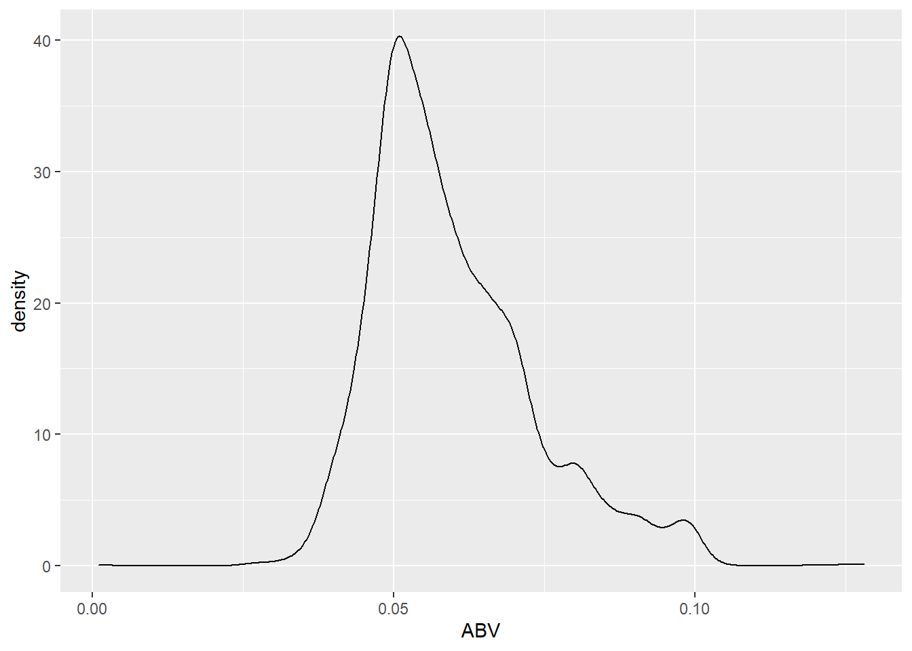
# Since column ABV's plot is somewhat normal, we will impute its missing values with mean estimates
mergedData = mergedData %>%
mutate(ABV = replace_na(ABV, replace = mean(mergedData$ABV, na.rm = TRUE)))
ggplot(mergedData, aes(x = IBU)) + geom_density()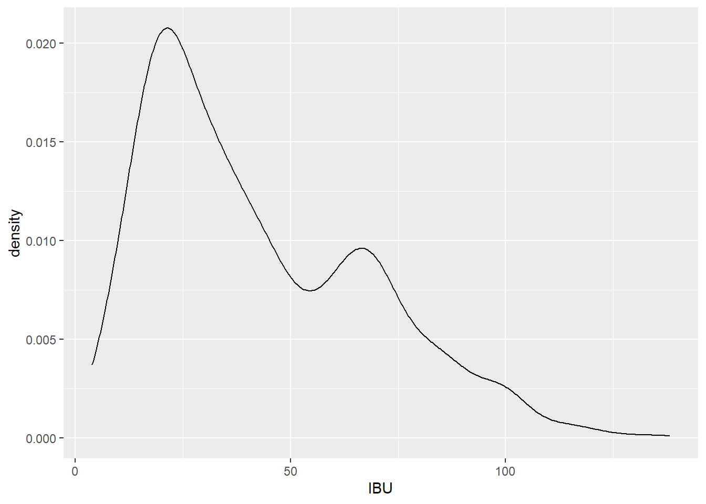
# Since column IBU's plot is heavily skewed right, we will impute its missing values using median estimates
mergedData = mergedData %>%
mutate(IBU = replace_na(IBU, replace = median(mergedData$IBU, na.rm = TRUE)))
head(mergedData)## Brew_ID Brewery_Name City State Beer_Name Beer_ID ABV IBU Style Ounces
## 1 1 NorthGate Brewing Minneapolis MN Pumpion 2689 0.060 38 Pumpkin Ale 16
## 2 1 NorthGate Brewing Minneapolis MN Stronghold 2688 0.060 25 American Porter 16
## 3 1 NorthGate Brewing Minneapolis MN Parapet ESB 2687 0.056 47 Extra Special / Strong Bitter (ESB) 16
## 4 1 NorthGate Brewing Minneapolis MN Get Together 2692 0.045 50 American IPA 16
## 5 1 NorthGate Brewing Minneapolis MN Maggie's Leap 2691 0.049 26 Milk / Sweet Stout 16
## 6 1 NorthGate Brewing Minneapolis MN Wall's End 2690 0.048 19 English Brown Ale 16tail(mergedData)## Brew_ID Brewery_Name City State Beer_Name Beer_ID ABV IBU
## 2405 556 Ukiah Brewing Company Ukiah CA Pilsner Ukiah 98 0.055 35
## 2406 557 Butternuts Beer and Ale Garrattsville NY Porkslap Pale Ale 49 0.043 35
## 2407 557 Butternuts Beer and Ale Garrattsville NY Snapperhead IPA 51 0.068 35
## 2408 557 Butternuts Beer and Ale Garrattsville NY Moo Thunder Stout 50 0.049 35
## 2409 557 Butternuts Beer and Ale Garrattsville NY Heinnieweisse Weissebier 52 0.049 35
## 2410 558 Sleeping Lady Brewing Company Anchorage AK Urban Wilderness Pale Ale 30 0.049 35
## Style Ounces
## 2405 German Pilsener 12
## 2406 American Pale Ale (APA) 12
## 2407 American IPA 12
## 2408 Milk / Sweet Stout 12
## 2409 Hefeweizen 12
## 2410 English Pale Ale 124. Computing medians for ABV and IBU of each state
The medians for both are plotted as histograms.
# Plot medium ABV
mergedDataABV = mergedData %>% group_by(State) %>% summarise(median = median(ABV))
ggplot(mergedDataABV, aes(x = State, y = median, fill = State)) +
geom_bar(stat = "identity") +
scale_x_discrete(labels = NULL, breaks = NULL) + labs(x = "") +
ggtitle("Median Alcohol By Volume In Each State")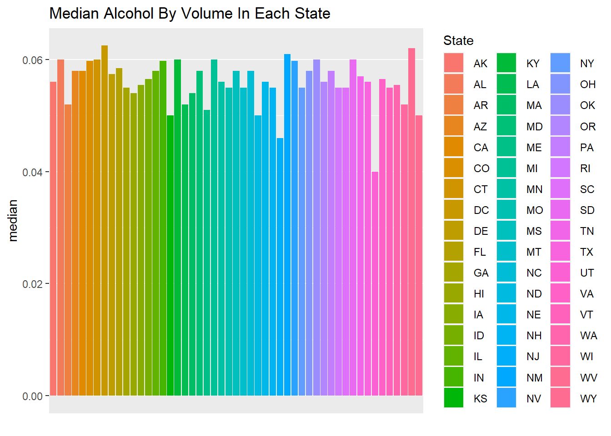
# Plot medium IBU
mergedDataIBU = mergedData %>% group_by(State) %>% summarise(median = median(IBU))
ggplot(mergedDataIBU, aes(x = State, y = median, fill = State)) +
geom_bar(stat = "identity") +
scale_x_discrete(labels = NULL, breaks = NULL) + labs(x = "") +
ggtitle("Median International Bitterness Unit In Each State")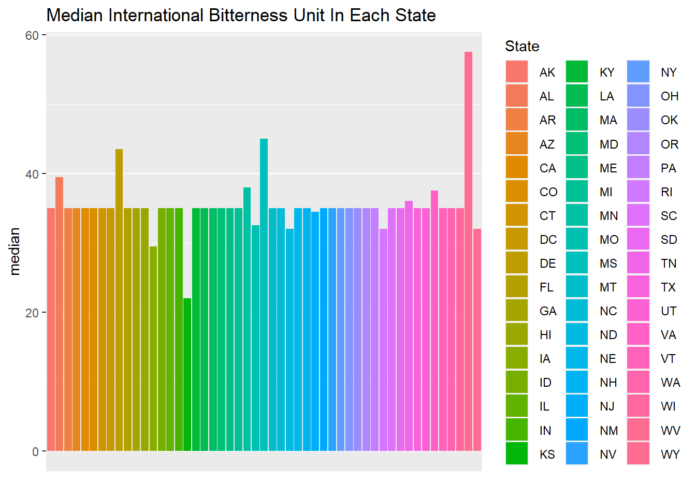
5. Determine which state with the maximum alcoholic (ABV) beer, and the most bitter (IBU) beer
Colorado has the maximum alcoholic beer. Oregon has the most bitter beer.
mergedData[which.max(mergedData$ABV), "State"]## [1] " CO"mergedData[which.max(mergedData$IBU), "State"]## [1] " OR"6. Summary and Distribution of the ABV variable
ABV has a minimum of 0.001, a maximum of 0.128, a mean of 0.060, and a median of 0.057. Its standard deviation is 0.013 and its 1st and 3rd quarters are 0.050 and 0.067, respectively. The distribution of ABV is roughly normal based on the histogram, and both the scatterplot and boxplot show lots of variance and outliers.
str(mergedData[c("ABV")])## 'data.frame': 2410 obs. of 1 variable:
## $ ABV: num 0.06 0.06 0.056 0.045 0.049 0.048 0.042 0.08 0.125 0.077 ...summary(mergedData[c("ABV")])## ABV
## Min. :0.00100
## 1st Qu.:0.05000
## Median :0.05700
## Mean :0.05977
## 3rd Qu.:0.06700
## Max. :0.12800sd(mergedData$ABV)## [1] 0.01336634hist(mergedData$ABV,
main = "Distribution of ABV",
prob = TRUE,
xlab = "Alcohol By Volume (Units)",
border = "darkblue",
col = "orange",
ylim = c(0,40))
lines(density(mergedData$ABV),
lwd = 2, # thickness of density line
col = "chocolate3")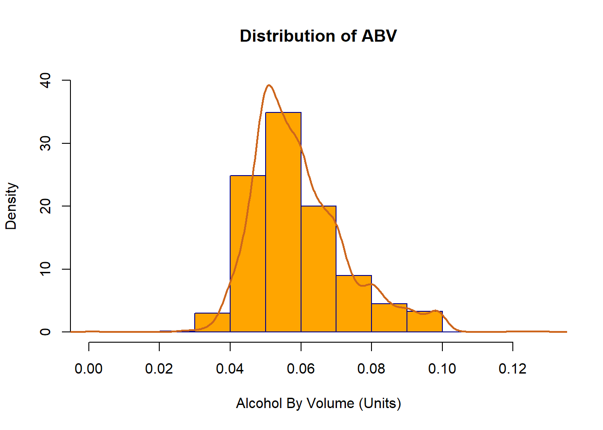
plot(mergedData$ABV, ylab = "Alcohol By Volume", pch=19)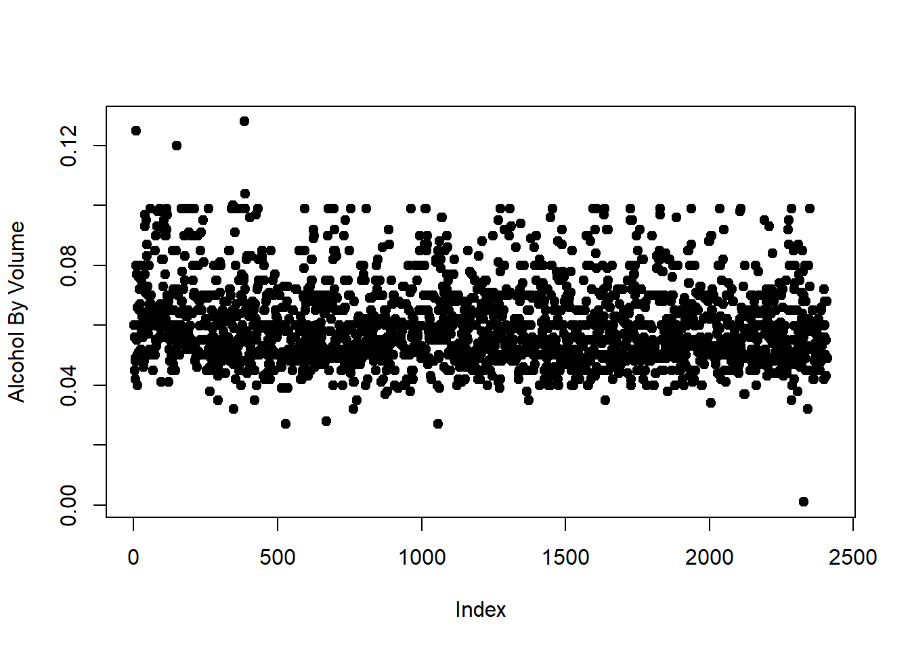
boxplot(mergedData$ABV, horizontal = TRUE, notch = TRUE)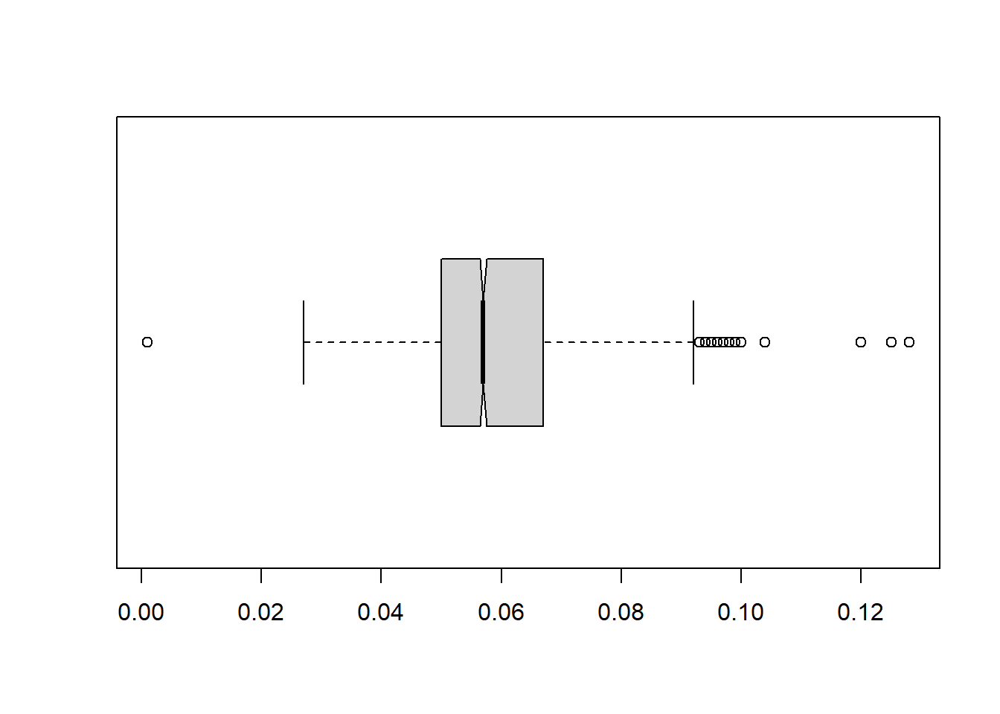
7. Relationship Between Bitterness and Alcoholic Content
As shown in the scatter plot there does appear to be an apparent relationship between ABV and IBU. The relationship is fairly linear, with a rise in IBU corresponding in a rise in ABV. With an r value of 0.51 we can consider this as a moderately correlated relationship.
# Scatter plot of relationship of IBU and ABV
ggscatter(mergedData, x = "IBU", y = "ABV",
add = "reg.line", conf.int = TRUE,
cor.coef = TRUE, cor.method = "pearson",
xlab = "International Bitterness Unit", ylab = "Alcohol By Volume")## `geom_smooth()` using formula 'y ~ x'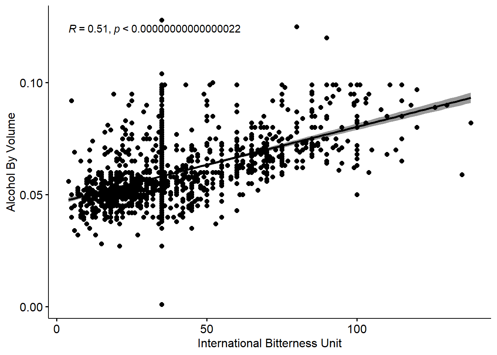
8.1. Using KNN, investigate the difference with respect to IBU and ABV, between IPAs and other types of Ale
We initially checked for NAs in the data, before training a 70/30 KNN model that results to 80.43% accuracy and a confidence interval of (0.7651, 0.8396). The sensitivity is 0.8874 and the specificity is 0.6587.
# Checking NA's
colSums(is.na(mergedData))## Brew_ID Brewery_Name City State Beer_Name Beer_ID ABV IBU Style
## 0 0 0 0 0 0 0 0 0
## Ounces
## 0# Since no more NA's exist, we can proceed to build a KNN model
# Filtering and selecting the interested beer statistics
IPAandALE = filter(mergedData, grepl("IPA|Ale", Style))
IPAandALE_KNN = select(IPAandALE, ABV, IBU, Style)
# Iterate through each row of Style and match & sub to only say IPA or Ale.
for (i in 1:nrow(IPAandALE_KNN)) {
if (is.na(str_match(IPAandALE_KNN[i, 3], ".Ale"))) {
IPAandALE_KNN[i, 3] = "IPA"
} else {
IPAandALE_KNN[i, 3] = "ALE"
}
}
# Setting up a 70/30 split for a train and test set
set.seed(760397, sample.kind = "Rounding")
splitPercent = .7
trainIndex = sample(1:dim(IPAandALE_KNN)[1], round(splitPercent * dim(IPAandALE_KNN)[1]))
train = IPAandALE_KNN[trainIndex,]
test = IPAandALE_KNN[-trainIndex,]
# Train the KNN model using beer Style as class, and IBU and ABV as determinants
classifications = knn(train[, c(1:2)], test[, c(1:2)], train$Style, prob = TRUE, k = 20)
confusionMatrix(table(classifications, test$Style))## Confusion Matrix and Statistics
##
##
## classifications ALE IPA
## ALE 260 57
## IPA 33 110
##
## Accuracy : 0.8043
## 95% CI : (0.7651, 0.8396)
## No Information Rate : 0.637
## P-Value [Acc > NIR] : 0.000000000000003779
##
## Kappa : 0.5635
##
## Mcnemar's Test P-Value : 0.01533
##
## Sensitivity : 0.8874
## Specificity : 0.6587
## Pos Pred Value : 0.8202
## Neg Pred Value : 0.7692
## Prevalence : 0.6370
## Detection Rate : 0.5652
## Detection Prevalence : 0.6891
## Balanced Accuracy : 0.7730
##
## 'Positive' Class : ALE
## 8.2. Hypertuning K
We also wanted to solidify our results by hypertuning the K in our model, as well as the randomized seed, for 100 times. The best K to use is 4 with an accuracy of 83.70%.
# Set placeholders for accuracy and k
hypertune = data.frame(accuracy = numeric(100), k = numeric(100))
# This 'for' loop iterates the training of our KNN model 100 times
for (i in 1:100)
{
set.seed(i)
trainIndex = sample(seq(1:length(IPAandALE_KNN$ABV)), round(.7 * length(IPAandALE_KNN$ABV)))
trainBeer = IPAandALE_KNN[trainIndex,]
testBeer = IPAandALE_KNN[-trainIndex,]
classifications = knn(train[, c(1:2)], test[, c(1:2)], train$Style, prob = TRUE, k = i)
CM = confusionMatrix(table(classifications, test$Style))
hypertune$accuracy[i] = CM$overall[1]
hypertune$k[i] = i
}
# Plot of the hypertuning of k
ggplot(hypertune, aes(x = k, y = accuracy)) +
geom_line() +
labs(x = "Tally", y = "Accuracy")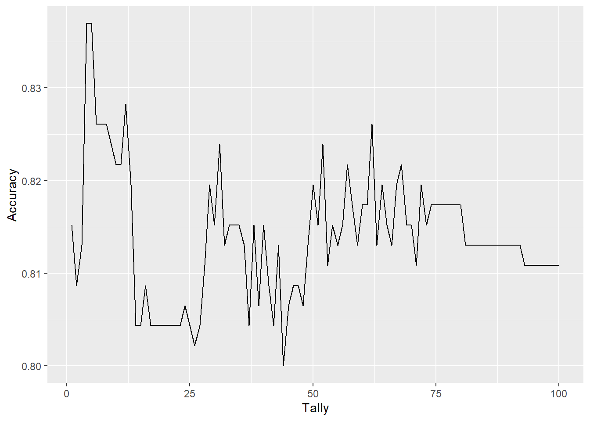
# Display the highest accuracy and its k
max(hypertune$accuracy)## [1] 0.8369565which.max(hypertune$accuracy)## [1] 49. Knocking your socks off
The below pie chart shows the 10 most popular styles of beers. A few interesting things are shown here. First that 9 of the styles from the top 10 are ales. Second, 56% of all beers are one of these top 10 styles. Third, 27% of all beers are either an APA or an American IPA.
# Wrangling the data
topbeers = mergedData %>% count(Style, sort = TRUE)
str(topbeers)## 'data.frame': 100 obs. of 2 variables:
## $ Style: chr "American IPA" "American Pale Ale (APA)" "American Amber / Red Ale" "American Blonde Ale" ...
## $ n : int 424 245 133 108 105 97 70 68 52 51 ...# Finding the sum of the rest of the beer styles
num_other_beer_styles = 0
for (i in 11:nrow(topbeers))
{
#myprint = paste(topbeers$Style[i])
#print(myprint)
num_other_beer_styles = num_other_beer_styles + topbeers$n[i]
}
num_other_beer_styles## [1] 1057# Make and append a new row that contains the other beer styles
top10beers = head(topbeers, 10)
top10beers[nrow(top10beers) + 1,] = c("Other Beer Styles", num_other_beer_styles)
# Fix the n row into numeric again
top10beers$n = as.numeric(top10beers$n)
top10beers## Style n
## 1 American IPA 424
## 2 American Pale Ale (APA) 245
## 3 American Amber / Red Ale 133
## 4 American Blonde Ale 108
## 5 American Double / Imperial IPA 105
## 6 American Pale Wheat Ale 97
## 7 American Brown Ale 70
## 8 American Porter 68
## 9 Saison / Farmhouse Ale 52
## 10 Witbier 51
## 11 Other Beer Styles 1057str(top10beers)## 'data.frame': 11 obs. of 2 variables:
## $ Style: chr "American IPA" "American Pale Ale (APA)" "American Amber / Red Ale" "American Blonde Ale" ...
## $ n : num 424 245 133 108 105 97 70 68 52 51 ...# Variable to store the colors of the corresponding top 10 beer styles
mypallete = c("#C44D00", "#E9AF01", "#772725", "#DFAE01", "#C8881A",
"#F8B506", "#480F08", "#312223", "#CB8226", "#E9B801", "#FFE82A")
# Calculate the beer style percentages
percentages = (top10beers[[2]] / sum(top10beers[[2]])) * 100
top10_percentages_rounded = round(percentages, digits = 0)
top10_names_and_percentages = paste(top10beers[[1]], top10_percentages_rounded)
top10_names_and_percentages = paste(top10_names_and_percentages, "%", sep = "")
# Plot a pie chart of the top 10 beer styles with percentages
pie(top10beers$n, top10_names_and_percentages,
col = mypallete, border = "white",
main="Beer Styles Pie Chart")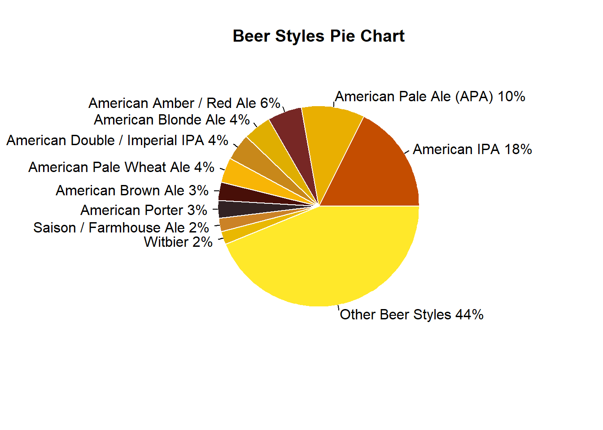
# Percentage of beers that are one of the top 10 styles
(sum(topbeers$n[1:10]) / 2410) * 100## [1] 56.14108# Percentage of beers that are one of the top 2 styles
((topbeers$n[2] + topbeers$n[1]) / 2410) * 100## [1] 27.75934Conclusion
Thank you for your time. In this investigation we have covered; brewery count per state, beer descriptors per state, nationwide statistics for ABV, the relationships between ABV and IBU, and the top 10 beer styles. Some notable highlights from this investigation are:
- In the brewery density map we saw that there are a number of states that have a low density of breweries for their population.
- When looking at beer descriptors per state we noted that
- Half of all beers were between 0.05 ABV and 0.067 ABV
- ABV and IBU had a moderately linear relationship
- 9 out of the top 10 beer styles were Ale’s
Please let us know if you have any questions.
- Duy Nguyen
- Garrett Shankel